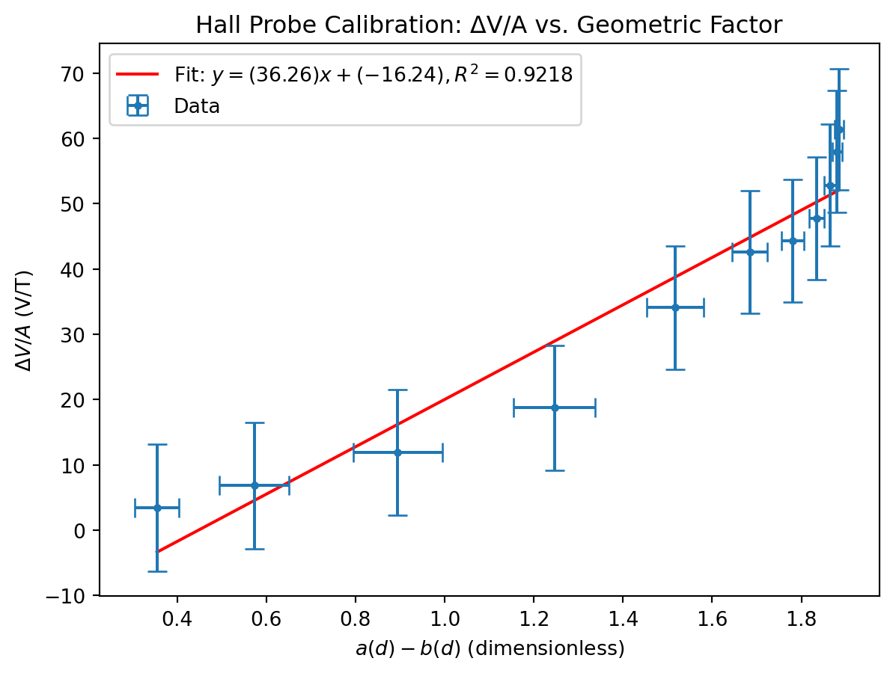
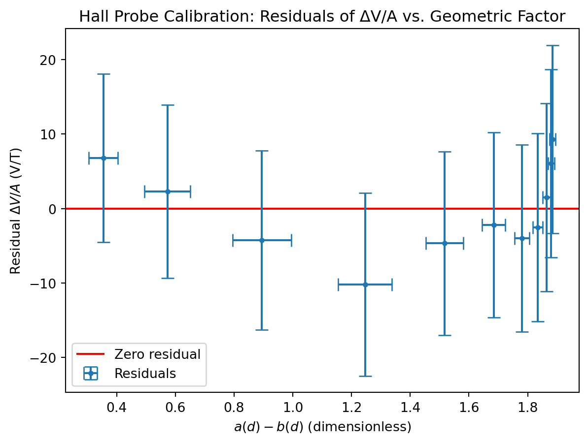

import warnings
from math import pi, sqrt
import matplotlib.pyplot as plt
import numpy as np
from scipy import constants, odr
from uncertainties import UFloat, ufloat
warnings.filterwarnings("ignore", category=FutureWarning, module="uncertainties")
warnings.filterwarnings(
"ignore",
category=FutureWarning,
message=r"AffineScalarFunc\.__abs__\(\) is deprecated",
)
warnings.filterwarnings(
"ignore", category=UserWarning, message="Using UFloat objects with std_dev==0"
)Bryce Tabangcura - PHYS1201 Lab Week 3
Lab partner: haven bunter-gooley
The Experiment
Abstract
In this lab, we examined the connection between distance to center of solenoid and the magnetic field strength. We used the equation \[B_z = \frac{\mu_0}{4\pi} \frac{2\pi I N}{L} \left[ \frac{d + L/2}{\sqrt{(d+L/2)^2 + R^2}} - \frac{d - L/2}{\sqrt{(d-L/2)^2 + R^2}} \right]\]. This allowed us to check our value for the manufacturer sensitivity of the hall probe used, that being 3.13 \(\pm\) 0.09 mV/G. We experimented by varying the distance to center of a solenoid, and measuring the voltage from a hall effect sensor at different points. Through some simple algebra, ew can isolate an x variable in terms of that distance, and a y variable in terms of the voltage, and we can estimate some value m which is the sensitivity of a hall effect probe. Our measured value is at a 3.63 mV/G with some uncertainty. Using the sigma uncertainty test, our measured value comes within 1.4 \(\sigma\) of the manufacturer value.
Introduction
Aim
The aim of this experiment is to prove/disprove, and to highlight the connection between distance to center of a solenoid and its magnetic field strength.
Experimental Method
Our first step was to measure each of our constants. This involves, measuring the length of the solanoid, counting each individual loop (just kidding), finding the bigger radius of the solenoid, measuring the length of ONLY the solenoid and the voltage of the hall effect sensor ouutside a magnetic field.
Afterwards, we would insert the hall effect sensor exactly at the middle of the solenoid, and displace the solenoid away from the center by 1 centemetre, and continued this process 9 times, to get 10 measurements.
We can do some algebra to isolate the sensitivity S of the hall effect sensor from line fitting.
\[B_z = \frac{\mu_0}{4\pi} \frac{2\pi I N}{L} \left[ \frac{d + L/2}{\sqrt{(d+L/2)^2 + R^2}} - \frac{d - L/2}{\sqrt{(d-L/2)^2 + R^2}} \right]\] \[B_z = \frac{\mu_0}{4\pi} \frac{2\pi I N}{L} (a-b)\] \[B_z = A (a-b)\] \[\frac{\Delta V}{S} = A (a-b)\] \[\frac{\Delta V}{A} = S (a-b)\] \[y = S x\] \[y = m x\]
We can get y and x
Results
All results and all analysis were recorded and interpreted in python, the following document will have everything in python.
First lets do some importing stuff, most of the imports are redundant
Next import helper functions, i only have two, one to fit a linear equation, and the other to calculate the sigma difference between two values with uncertainties.
def fit_odr(x: list[UFloat], y: list[UFloat], zero_intercept: bool = False):
x_nom, x_err = [v.n for v in x], [v.s for v in x]
y_nom, y_err = [v.n for v in y], [v.s for v in y]
data = odr.RealData(x_nom, y_nom, sx=x_err, sy=y_err)
if zero_intercept:
model, beta0 = odr.Model(lambda p, x: p[0] * x), [1]
else:
model, beta0 = odr.Model(lambda p, x: p[0] * x + p[1]), [1, 0]
out = odr.ODR(data, model, beta0=beta0).run()
slope = ufloat(out.beta[0], out.sd_beta[0])
intercept = (
ufloat(out.beta[1], out.sd_beta[1]) if not zero_intercept else ufloat(0, 0)
)
y_pred = model.fcn(out.beta, np.array(x_nom))
ss_res = np.sum((np.array(y_nom) - y_pred) ** 2)
ss_tot = np.sum(
np.array(y_nom) ** 2
if zero_intercept
else (np.array(y_nom) - np.mean(y_nom)) ** 2
)
r_squared = 1 - ss_res / ss_tot
return slope, intercept, r_squared
def compsigma(a, b):
return abs((a.n - b.n) / ((((a.s**2) + (b.s**2)) ** (1 / 2))))Next is is our measured and given constants. For all of our length measurements, we measure in increments of 0.5cm, so our uncertainty is half that, being 0.25cm. For our current, we have a 1% error in our ammeter. For our voltage_0, we have a 1.2% error plus the smallest digit.
length_solanoid = ufloat(15, 0.25) / 100 # cm
loops = 700
radius_outer = ufloat(5.5, 0.25) / 2 / 100 # cm
radius_inner = ufloat(4, 0.25) / 2 / 100 # cm
radius = radius_outer
current = ufloat(2, 2 * 0.01) # amps
total_length = ufloat(15.5, 0.25) / 100 # cm
voltage_0 = ufloat(2.53, 2.53 * (1.2 / 100) + 0.01) # 1.2% plus last digitNext is our actual measured values, they are recorded in a list of tuples, where the first value is d, and the second value is the reading on the voltmeter from the hall effect sensor.
current_to_length = [
(0, 2.17),
(1, 2.19),
(2, 2.22),
(3, 2.25),
(4, 2.27),
(5, 2.28),
(6, 2.33),
(7, 2.42),
(8, 2.46),
(9, 2.49),
(10, 2.51),
]It’s here where I will define more helper functions, these functions are components of the function of |B| \[B_z = \frac{\mu_0}{4\pi} \frac{2\pi I N}{L} \left[ \frac{d + L/2}{\sqrt{(d+L/2)^2 + R^2}} - \frac{d - L/2}{\sqrt{(d-L/2)^2 + R^2}} \right]\] \[B_z = \frac{\mu_0}{4\pi} \frac{2\pi I N}{L} (a-b)\]
def a(d):
val = d + total_length / 2
return (val) / ((val**2 + radius**2) ** 0.5)
def b(d):
val = d - total_length / 2
return (val) / ((val**2 + radius**2) ** 0.5)And then I will interpolate the data into lengths and deltavoltages.
The lengths have an uncertainty of 0.25cm, half the increment of 0.5cm measurements. the voltage measurements have uncertainty of 1.2% + last digit.
lengths = [ufloat(x[0], 0.25) / 100 for x in current_to_length]
delta_voltages = [
abs(ufloat(x[1], x[1] * (1.2 / 100) + 0.01) - voltage_0) for x in current_to_length
]From this we can get x and y, recall from method, y = deltav/A and x = a - n.
A = (constants.mu_0 * current * loops) / (2 * length_solanoid)
y = [delta_voltages[x] / A for x in range(len(lengths))]
x = [a(n) - b(n) for n in lengths]From this we can get our sigma difference. which is 1.4 We will use our two helper functions here.
S = fit_odr(x, y)[0] / 10
print(compsigma(ufloat(3.13, 0.09), S))1.3665082276722584We can also graph this.
slope, intercept, r_squared = fit_odr(x, y)
plt.figure()
first = x[0].n
last = x[-1].n
plt.plot(
[first, last],
[first * slope.n + intercept.n, last * slope.n + intercept.n],
"r-",
label=f"Fit: $y = ({slope.n:.4g})x + ({intercept.n:.4g}),R^2 = {r_squared:.4f}$",
)
plt.errorbar(
[v.nominal_value for v in x],
[v.nominal_value for v in y],
xerr=[v.std_dev for v in x],
yerr=[v.std_dev for v in y],
capsize=5,
linestyle="none",
marker="o",
markersize=3,
label="Data",
)
plt.title("Hall Probe Calibration: ΔV/A vs. Geometric Factor")
plt.xlabel("$a(d) - b(d)$ (dimensionless)")
plt.ylabel(r"$\Delta V / A$ (V/T)")
plt.legend()
plt.show()
slope, intercept, r_squared = fit_odr(x, y)
residuals = [yi - (slope * xi + intercept) for xi, yi in zip(x, y)]
plt.figure()
plt.axhline(0, color="r", linestyle="-", label="Zero residual")
plt.errorbar(
[v.nominal_value for v in x],
[r.nominal_value for r in residuals],
xerr=[v.std_dev for v in x],
yerr=[r.std_dev for r in residuals],
capsize=5,
linestyle="none",
marker="o",
markersize=3,
label="Residuals",
)
plt.title("Hall Probe Calibration: Residuals of ΔV/A vs. Geometric Factor")
plt.xlabel("$a(d) - b(d)$ (dimensionless)")
plt.ylabel(r"Residual $\Delta V / A$ (V/T)")
plt.legend()
plt.show()
nu = 1
chi_squared = sum(
(r.nominal_value**2) / (yi.std_dev**2)
for r, yi in zip(residuals, y)
)
reduced_chi_squared = chi_squared / nu
print(f"χ² = {chi_squared:.4f}")
print(f"ν = {nu}")
print(f"χ²/ν = {reduced_chi_squared:.4f}")χ² = 3.8613
ν = 1
χ²/ν = 3.8613Analysis and Discussion
Our sigma difference is only 1.37 \(\sigma\), so our values agree.
BUT. visually, from the graph it becomes apparently clear that our residual plot shows a trend, in particular it seems as though the residual plot compared to the values resemble a parabola.
Also, considering we are using a linear equation, our value of \(\nu\) is 1. From our chi squared we get a value of 3.8, that is extremelly high. This indicates that our equation of the hall probe is innacurate.
Conclusion
Our values agree, but the validity of the measured values is in question.
This indicates three things, a systematic error, a math error, or simply the equation being used is wrong.